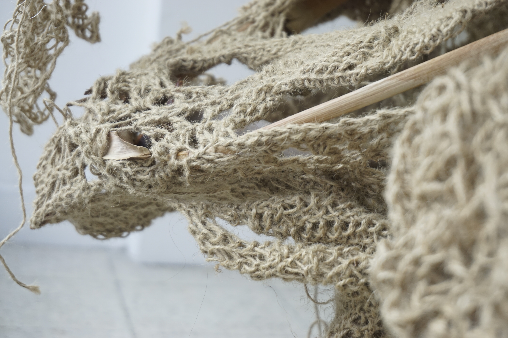
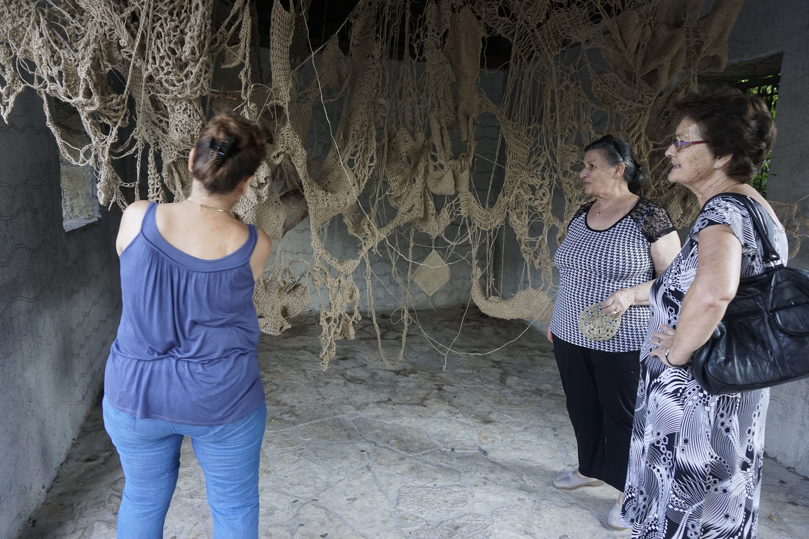
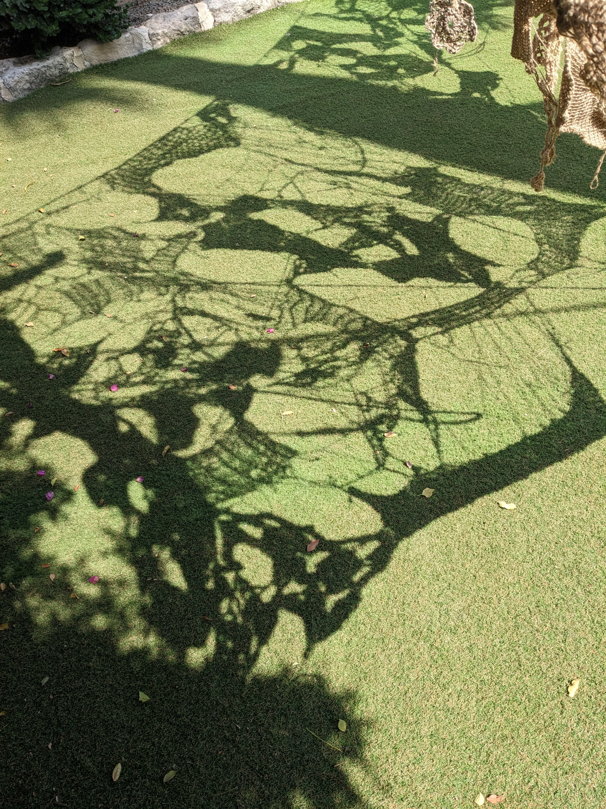

Continuous Thread Archive →
'Continuous thread' is a socially engaged installation that has been presented in different ways from 2016 to 2023.


Modus Operandi 17, Displacement As a State of Mind, Koraï, CY

Guests' living room, THOC Apothikes Theatre, CY (Photo: Kyriakos Christodoulides)

Animart Greece 2017, Amfissa

International Conference: Protect and Secure Worship, 2023, Chateau Status, Nicosia
In 2016, I created this installation using crochet jute twine and branches. Crochet is a practice learned from my grandmothers which is very common in the Eastern Mediterranean and it is deeply connected to a slow pace lifestyle, a meditative practice, often missing from our modern lives.
The basic idea is that the artwork can be in continuous change (like humanity). It can be applied to any space, be rolled, stretched and fitted in a suitcase. Human beings have always been moving for survival or progression. Memories, customs and traditions are their only heritage - House. In a shifting period the traditional patterns are not reproduced the same. Each one can ‘knit’ their own history.
Artists, craftsmen and other volunteers were invited to participate to the process of transforming the installation and become a part of the ''Continuous thread''. It has been presented as a scenographic piece in theatre and dance performances, it was worn as a garment at a dance performance, and exhibited in various other ways.